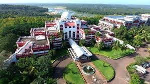

MES College of Engineering (MESCE), Kuttipuram, offers a 2-year full-time Master of Computer Applications (MCA) program affiliated with APJ Abdul Kalam Technological University. The department has a dedicated faculty, state-of-the-art labs, and emphasizes both theoretical knowledge and practical skills to prepare students for the IT industry. The program, established in 1999,was the first MCA program in Kerala's self-financing sector and currently has a seat intake of 60 students.
